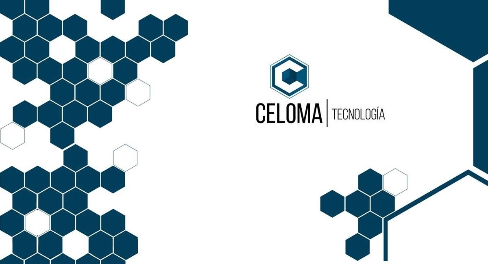
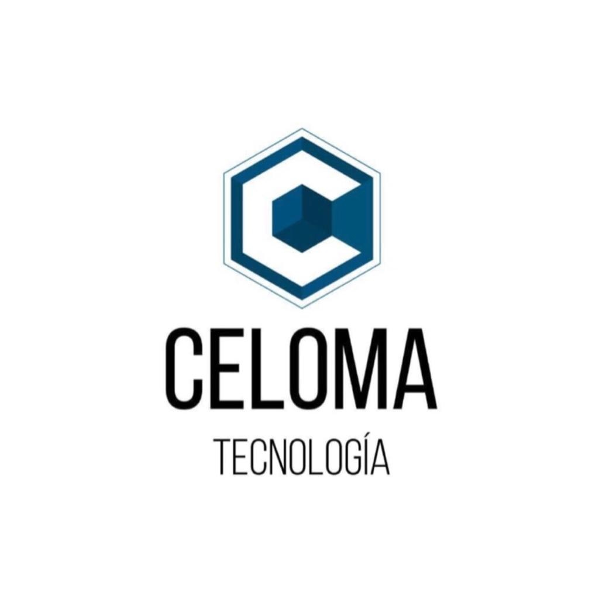

<!DOCTYPE HMTL>
<HMTL lang="es" dir="ltr">
<head>
    <meta charset="utf-8">
    <link rel="stylesheet" href="style.css">
    <link href="https://fonts.googleapis.com/css2?family=Cairo:wght@500&family=Roboto:ital,wght@1,100&display=swap" rel="stylesheet">
    <title>Celoma Tecnologia</title>
</head>
<body>
    <header>
     
        <body>
            <header>
             
            <ul class="menu">
                <h3>Celoma Tecnologia</h3>      
                <li><a href="index.html">Inicio</a></li>
                <li><a href="Servicios.html">Servicios</a></li>
                <li><a href="clientes.html">Clientes</a></li>
                <li><a href="Contactos.html">Contacto</a></li>
                <a class="facebook" href="https://www.facebook.com/celomatecnologia/"></a>
                <a class="facebook" href="https://www.instagram.com/celomatecnologia/"></a>
            </ul>  
            
            </header>
    <div class="intruduccion">
    
        <div class="textServicio"><h5>Contrata nuestros servicios</h5>
            <p>-Asesoramiento financieros.<br>
               -Asesoramiento en transformacion digital.<br>
               -Digitalizacion de documentos.<br>   
            </p>
        </div>
    </div>
    <div class="asesoramientoFinServicio">
             <div class="imgAsesoramientoFinanciero"></div> 
             <p class="Titulo"> Asesoramiento Financiero</p>
             <p class="Parrafo"><strong> Funciones más comunes de un Asesor Financiero: </strong><br>
                - Brindar consultoría o asesoría financiera profesional y gestoría de transacciones a los clientes.<br>
                - Identificar las necesidades y objetivos de los clientes.<br>
                - Comprar y vender productos financieros,monedas extranjeras, etc.<br>
                - Desarrollar estrategias de inversión y comercio.<br>
                - Promocionar productos y servicios financieros.<br>
                - Educar, aconsejar y asesorar en cuanto a inversiones y finanzas.<br>
                ...Entre otras funciones mas que podemos ayudarte.<br></p>         
    </div>
    ;
    <div class="asesoramientoTrasnDigital">
        <p class="Titulo">Asesoramiento en transformacion digital</p>
               <p class="Parrafo">El desconocimiento, el miedo al cambio y los mitos en torno a la transformación digital <br>
                hacen que a muchos empresarios se les ponga la piel de gallina cuando escuchan hablar de este tema. La consecuencia <br>
                es que muchas organizaciones continúan con procesos de trabajo obsoletos y poco rentables<br>
                La digitalización ofrece un enorme potencial para ganar competitividad en un mundo cada vez más tecnológico<br>
                <strong>¿En qué consiste la transformación digital?</strong><br>
                La transformación digital se puede definir como la integración de las nuevas tecnologías en todas las áreas <br>
                de una empresa para cambiar su forma de funcionar. El objetivo es optimizar los procesos, mejorar su <br>
                competitividad y ofrecer un nuevo valor añadido a sus clientes.<br></p>
            </div>
              
         <div class="digitalizacionDocu">      
           <div class="TituloD">Digitalización de documentos</div>

            <p class="Parrafo"><strong>¿Qué es la gestión documental?</strong><br>
                En la era de la información, la mayoría de las organizaciones siguen funcionando a través del lápiz y el papel.<br> 
                Es por esto, que es importantísimo y de gran utilidad, digitalizar todos estos papeles para poder manipular, <br> 
                compartir, actualizar toda la información que se genera.<br>
                Todo esto, para un lograr un simple objetivo:<br>
                <strong>BUENAS DECISIONES</strong><br>
                 En Celoma Tecnología, ofrecemos: digitalización, guarda, custodia y destrucción certificada y segura de todos los <br>
                 documentos de tu organización.<br>
            </p>
        </div>
</body>

</html>